| Concatenation operation | |
| Disjunction operation | |
| Negation operation | |
| Set intersection operation | |
| Set union operation | |
| Power (X power of n) | |
| Infers |
[pages=1]title.pdf [pages=1]blank.pdf
[pages=1]abstract.pdf [pages=1]blank.pdf
This is a master thesis submitted in partial fulfilment of the requirements for degree of Masters of Science in Embedded Systems to Department of Information Technology, Uppsala University, Uppsala, Sweden.
I would like to thank Dr. Philipp Rümmer, Thomas Magnsson and Kenneth Andersson for initiating the work, supporting continuously and providing key insights.
I would like to thank Prof. Parosh Abdulla for reviewing my master thesis.
I express my gratitude to Prof. Daniel Kröening for helping me understand and providing updates of CBMC.
Special thanks to Therese Breinordh and Mats Svensson for taking care of all the administrative formalities at Ericsson.
I would like to thank Uppsala University and Ericsson for providing me all the software and hardware necessary for project.
Sincere thanks to my friends and my family who gave me courage and support throughout the thesis work.
| Concatenation operation | |
| Disjunction operation | |
| Negation operation | |
| Set intersection operation | |
| Set union operation | |
| Power (X power of n) | |
| Infers |
The complexity of hardware and software is increasing as the years are passing. With increase in complexity, likelihood of errors is much greater. A major goal of software engineering is to enable developers to implement systems which operate reliably despite the complexity. One of the ways to achieve this is by using formal methods [12]. Formal methods are mathematically based techniques, tools and languages for describing and verifying the system. These techniques can greatly increase our understanding of a system by revealing incompleteness, ambiguities and inconsistencies that may go undetected otherwise [20].
Single core processor's speed is limited by the physics of semiconductors. High performance computers are being designed using multiple cores to reach the high computation goals. In multicore systems, applications are designed to execute in parallel, and computation speed is achieved by parallel computation. The parallel computation increases complexity of software and hardware. Research industry is working on developing tools and techniques to reduce complexity and detect possible error cases. In this work we have analysed an embedded multicore Digital Signal Processor (DSP) architecture and software, and developed model checking techniques. DSPs are processors with special functional blocks to handle digital signals. A digital signal is a sequence of discrete values which represent a physical signal, for example, representing a radio signal or audio signal. Digital signal processing can be enhanced by features like fixed point arithmetic, coprocessors and dedicated registers. Standard C language does not have explicit support to handle these features. Industry and researchers have defined extensions like Embedded-C and DSP-C to add these features to standard C. We have added support for DSP-C in our bounded model checking tool to process DSP-C based programs. We will present multicore, parallel processing, DSP functionality and DSP-C in later chapters.
Model checking is a formal method for verifying logical correctness. Proving logical correctness can be very effective in development process since testing lacks the coverage [45], peer review is error prone and costly. For example as we can see in fig:example:test:coverage:code, the function 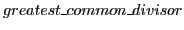 can iterate in while loop based on values of x and y, which are dynamic values. There are 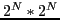 possible inputs and 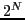 outputs, where N is number of bits in int data type. In large software it is impractical to cover all the inputs, outputs and behaviours of each function and module. There are alternative approaches in testing, like code coverage techniques and white-box testing, which can provide some assurance of behaviour but testing cannot prove the correctness.
Verification techniques are being employed extensively in hardware and embedded system development. Since, hardware and embedded systems are designed, developed once and mass produced, and bugs in implementation cannot be fixed once produced. Even a single bug in system may lead to recall of all the products. Also, embedded systems have become part of our regular life. For example, microwave oven at home to safety critical systems like power plant controller or flight controllers in aircraft. A single bug in these systems can lead to fatal disasters. Verification techniques can help us to identify possible error cases. In embedded systems, verification can identify problems like checking if array access is within the defined array bound, dangling pointers, arithmetic overflow or underflow and if it is a multicore systems, data races, deadlocks and many other properties can be verified [44,34,41].
Model checking statically analyses the implementation and asserts on properties of the logic. fig:model:checking shows the block diagram of model checking. A model checker reads program or circuit logic, converts it into a formula and compares it with the specification. Model checker matches logic and specification, and tells the implementation is incorrect if the logic differs from specification. Model checking is used to detect undesired behaviours of the system.
Software model checking is complex since it operates based on information available statically, without running programs and programs contain code segments controlled by dynamic conditions [18]. Software model checking also has to cope up with loops which are bounded with run-time conditions, for instance, while loop in function (fig:example:test:coverage:code) is bounded by values of x and y. Dynamically bounded programs can be verified using Bounded Model Checking (BMC), which considers a static bound on loops [3]. For instance fig:example:test:coverage:code:loopunrolled shows with loop unrolled. In this example static bound used for loop unrolling is 5. As we can see assert statement at the end is used to verify if bounding limit is not enough. We should note that bounded model checking does not guarantee complete program correctness, since it verifies programs within a bounds.
CBMC is a Bounded Model Checking tool which can process C and C++ programs and verify different properties [27,10,11]. It converts programs into intermediate forms which are called goto-programs. The goto-programs are simplified C and C++ programs, represented in the form of Control Flow Graphs (CFG). In goto-programs, variables are renamed so that each variable is assigned only once, the transformation is called Static Single Assignment (SSA) [11]. CBMC also supports pointers, arrays, structures, floating point operations and function pointers. CBMC handles loops by bounding the number of iterations each loop can be executed and unrolling each loop according to the bound. We will present CBMC with more details in later chapters.
We will cover more about DSP-C in later chapters. Ericsson uses contract based programing, which helps large teams working together on same software. It allows programmers to define the contracts for each module and/or functions. This style of programming provides a framework where module integration is less error-prone since each developer states the requirements for their modules in the contracts [30]. With this thesis we are providing a verifier to check validity of contracts among the function and/or modules.
We developed techniques to handle Ericsson's parallel software running on multicore DSP platform. Major challenge with the parallel/concurrent software verification includes state space explosion due to several control flow paths of parallel programs. Software architecture used in our case study does not pose state-space explosion issue since the software is statically scheduled and software does not share much data between threads and threads run independent of other threads. We also identified some of the platform features which can be verified using model checking and proposed model checking techniques.
In second chapter we will cover the features of DSP-C, programming model of Ericsson, satisfiability (SAT) solvers, introduce CBMC and discuss about platform specific properties. Third chapter describe the related work in verification. Fourth chapter describe the multicore hardware models and Ericsson's multicore platform. Fourth chapter briefly covers the extensions developed for CBMC to work with Ericsson's software and API stubs to handle platform API calls. In fifth chapter we will discuss about results of model checking, alternative approaches, conclusion. Last chapter is dedicated to propose possible future work.
This chapter introduces the tools and techniques used in this thesis. We will briefly describe all the feature of DSP-C in first section. Second section concentrates on contract based programming. Third section explains satisfiability (SAT) techniques. Fourth section describes features and architectures of CBMC.
As the name suggests DSP-C is a programming language extension proposed by a private company, Associated Compiler Experts (ACE). It is an extension to ISO/IEC IS 9899:1900 (ISO C) standard to support the hardware features of Digital Signal Processors (DSP's) [37]. These extensions are proposed to overcome the standard C language's inability to handle divided memory spaces, circular buffers, dedicated register sets, fixed point data-types and fixed point arithmetic [36].
Computing machines like calculators, computers or embedded controllers represent all the numbers in binary. Integers can be directly mapped to finite bit stream of binary digits. Common way to represent fractions is using floating points or fixed point. Floating point arithmetic supports wider range of values as it has "floating" decimal point. The number is represented using significant and exponent. [32] presents the various advantages and disadvantage of floating point numbers. Commonly embedded systems do not support floating point values since floating point arithmetic require large logic, needs more computation time and energy [39]. Common alternative is to use fixed point values. Fixed point use fixed number of digits after decimal point. Fixed point values are stored similar to integer values and the decimal position is known since its constant.
Programmers can use fixed point data types as easily as any other data types in C language, to describe fixed point arithmetic operations. Explicit support for fixed point types in programming language will allow compiler developers to design fixed point specific optimisations in compilers [36]. It also provides a standardised mechanism to define and use fixed point data types.
DSP-C defines the following fixed point data types:
|
DSP-C allows programmers to provide distributed memory views to compilers. Since memories in DSP's can be physically located in different places, providing divided memory view to developer gives them flexibility to decide on memory location for each variable. This is achieved through memory labelling. When a variable is defined, the label on definition tells compiler which memory will hold a particular variable.
Example

In above example, variable  and
and  may be allocated in different memory regions, which can be in different physical memory. For instance, memory label
may be allocated in different memory regions, which can be in different physical memory. For instance, memory label  will inform compiler that variable will be allocated in memory bank X and will inform that variable will be allocated in memory bank Y.
will inform compiler that variable will be allocated in memory bank X and will inform that variable will be allocated in memory bank Y.
In the example fig:example:contract:programming, precondition checks if the pointer is a NULL pointer and postcondition checks if the memory address reaches its max value.
Satisfiability (SAT) has been hot research topic, since SAT has shown high potential in verifying large systems [31]. SAT solvers work using satisfiability procedures in the core for propositional logic [14]. Propositional logic is a predicate in which formula contains Boolean variables, known as atoms, and variables are connected using logical directives like conjunction, disjunction and negation. If  is Boolean variable and,
is Boolean variable and,  and
and  are expressions built from Boolean variables, then we can define following formulas.
are expressions built from Boolean variables, then we can define following formulas.
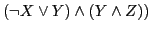 from fig:example:statemachine, is an example for formula constructed from above rules. And the formula can be evaluated to 0 or 1 based the values of all the variables. For example with  , 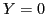 and 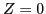 assignment formula is evaluated to 0, and
, 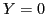 and 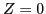 assignment formula is evaluated to 0, and  and 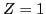 assignment formula is evaluated to 1. This example illustrates, variables can be constrained through operators, for instance for formula to be 1,
and 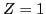 assignment formula is evaluated to 1. This example illustrates, variables can be constrained through operators, for instance for formula to be 1,  must be 1. Boolean Satisfiability of a formula is a process of finding an assignment which evaluates it to 1. In this example 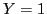 and assignment will make the formula to be evaluated to 1 and satisfy it. The formulas which cannot be satisfied with any possible assignment are called unsatisfiable. For example,
must be 1. Boolean Satisfiability of a formula is a process of finding an assignment which evaluates it to 1. In this example 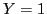 and assignment will make the formula to be evaluated to 1 and satisfy it. The formulas which cannot be satisfied with any possible assignment are called unsatisfiable. For example,
 cannot be satisfied with any assignments and hence unsatisfiable.
cannot be satisfied with any assignments and hence unsatisfiable.
SAT problem is NP-Complete [29]. Most SAT solvers use restricted representation of formulas in Conjunctive Normal Formula (CNF). A formula in Conjunctive Normal Form (CNF) is a congestion of clauses. A clause is disjunction of literals. A literal is a Boolean variable, or negation of Boolean variable. For example,
 , here
, here
 is a clause with set of variables with or without negation. The approach for finding satisfiability differs in different tools. One of the commonly used approaches is DPLL [13]. In DPLL, given a CNF formula, the algorithm heuristically chooses an unassigned variable and assigns it a value, 0 or 1, this step is known as branching step. Then solver tries to simplify the consequences based on deduction rule. In deduction it tries to deduce if any of clause become 0. If one of the assignments leads 0, the algorithm back tracks since it will not lead to any satisfiability. Once it assigns a combination of values to all the variables which can be 1, the formula is said to be satisfiable.
is a clause with set of variables with or without negation. The approach for finding satisfiability differs in different tools. One of the commonly used approaches is DPLL [13]. In DPLL, given a CNF formula, the algorithm heuristically chooses an unassigned variable and assigns it a value, 0 or 1, this step is known as branching step. Then solver tries to simplify the consequences based on deduction rule. In deduction it tries to deduce if any of clause become 0. If one of the assignments leads 0, the algorithm back tracks since it will not lead to any satisfiability. Once it assigns a combination of values to all the variables which can be 1, the formula is said to be satisfiable.
CBMC is an open source Bounded Model Checker for ANSI-C and C++ programs [27]. Bounded model checking is a technique to verify programs within defined bounds. We will discuss more about bounded model checking in next section. CBMC compiles ANSI-C or C++ into goto-programs and verifies properties of the program using bounded model checking techniques. The goto-programs are simplified C and C++ programs, represented in the form of Control Flow Graphs (CFG). The properties includes checking if an assertion is true, array bound limits, dangling pointers, arithmetic overflow/underflow and some other platform specific properties as listed in [27]. fig:CBMC:block shows the block diagram of CBMC. Front end compiles source code to intermediate form, called goto-programs. The loops in goto-programs are unrolled.
Example fig:example:loop:with:static:condition can be simply converted as shown in fig:example:unrolled:loop:with:static:condition, which contains sequential statements.
Typically there are also loops which are bounded by run-time conditions, for example in fig:example:loop:with:dynamic:condition. C code in fig:example:loop:with:dynamic:condition contains a while loop which terminates when array_b encounters an end of string character ( ) in its index. Static analysis may not provide any information about the contents of arry_b and it is impossible to know the number of iteration loop will run during execution. Most of the tools use bounded loop unrolling, i.e. if the exit condition for a loop cannot be determined statically, loops are unrolled a maximum of N number of times. Number N can be adjusted according to application. For instance above loop in fig:example:loop:with:dynamic:condition, with N set to 5, can be transformed as shown in fig:example:unrolled:loop:with:dynamic:condition.
) in its index. Static analysis may not provide any information about the contents of arry_b and it is impossible to know the number of iteration loop will run during execution. Most of the tools use bounded loop unrolling, i.e. if the exit condition for a loop cannot be determined statically, loops are unrolled a maximum of N number of times. Number N can be adjusted according to application. For instance above loop in fig:example:loop:with:dynamic:condition, with N set to 5, can be transformed as shown in fig:example:unrolled:loop:with:dynamic:condition.
Assert statement, at last, can be used to check if unrolling was not enough.

As we can see in the expression,  is assigned a value and used as a source in the expression. It is not possible to represent such expressions in proposition logic. To avoid it, CBMC converts logic as shown in fig:example:renaming:varibales.
is assigned a value and used as a source in the expression. It is not possible to represent such expressions in proposition logic. To avoid it, CBMC converts logic as shown in fig:example:renaming:varibales.
Standard ways of implementing decision procedure is bit vector flattening followed by a call to a propositional SAT solver. In this process first step is encoding statements from goto-program into bit vectors. Encoding variables and constants to bit vectors is a straight forward task, for example a variable X of size N, can be encoded into bit vectors b of length N. Bit vector operations have to be handled on individual bases. For example, let X, Y and Z be integer variable and a[n], b[n] and c[n] be the bit vectors for each variable respectively. For addition of two bits, we can use a one bit full adder circuit as in fig:bitadder. The circuit will provide us with following formula.
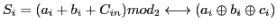

Bit flattening is a process of transforming bit vector logic into propositional logic [28]. For example above bit vector logic can be converted to a propositional logic for 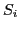.
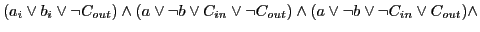

Similarly we can build carry chain adder for bit vectors, subtractor for subtract operation, bit wise operations etc. The multiplication, division and modulo operations generate large formulas. To handle large expressions and large operations incremental flattening is used [28].
As we know from sec:sat:solver, a proposition logic can be verified using SAT solvers. SAT solver can work on propositional logic of program logic to verify expressions and check different properties of the program logic.
Model checking is also used to verify specific properties of a system. Some properties are local to a single thread running in the system and some depend on multiple threads running concurrently. The software concurrency in a single core system is introduced by context switches and parallel computing platforms have concurrent execution paths.
Thread local properties include memory access mechanisms, correctness of memory management and pattern of mutex accesses. For example work done in [15] is used to identify DMA race conditions in IBM cell processors. In this case study, DMA race detection is achieved through program instrumentation. In program instrumentation, a part of code is added or modified to verify some properties of the logic. For example, to verify array bound, one can add an assertion to check the index value on every array access.
In concurrent programs we can observe more complex properties. For example, concurrent access to shared resources, signalling between the threads and dynamic memory management among threads or race conditions among the threads. Behaviour of these properties depends on the hardware and operating system support. The program instrumentation can be used to verify these properties.
Initially logical systems were verified using proof based systems. In proof based verification, system description is represented using a set of formulas  in a suitable logic and specification is represented using another formula
in a suitable logic and specification is represented using another formula  . The verification of system is done by finding proof that
. The verification of system is done by finding proof that 

 . As we can see this process is deductive and usually requires human guidance [22,1].
. As we can see this process is deductive and usually requires human guidance [22,1].
The work done by Vardi and Wolper in [40], provided a way of modelling the program specifications into formulas which can be verified automatically. According to this proposal, once expected behaviours and use cases are decided, all the requirements are written into formal specification, which is mathematical description of the system. The formal specifications are written in Linear time Temporal Logic (LTL) and the LTL logic are verified to check the properties of the system. If the system described using LTL behaves as expected, the system is said to be bug free.
Currently we have techniques to convert programs described in high level programming language to mathematical formulas and automated verification technique to verify the properties of the formulas. The sec:back:cbmc describes more details of converting programs to verifiable mathematical formulas and verification using Bounded Model Checking.
Specifications and program are converted into mathematical formulas and the formulas have to be verified for correctness and check for incorrect behaviours. For example consider model checking of state-machine in fig:example:statemachine. State  can be reached through and 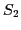 under the condition
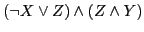. Suppose we want to know if
can be reached through and 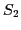 under the condition
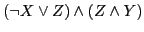. Suppose we want to know if  is reachable under certain conditions, which may violate the specification and is an incorrect behaviour. We need techniques to process the formula
and check if it is satisfiable. Such techniques are called decision procedures. Two of the commonly used decision procedures are Binary Decision Diagrams (BDDs) and Satisfiability (SAT) [25]. In previous chapter we have discussed about satisfiability and next section describes BDD briefly.
is reachable under certain conditions, which may violate the specification and is an incorrect behaviour. We need techniques to process the formula
and check if it is satisfiable. Such techniques are called decision procedures. Two of the commonly used decision procedures are Binary Decision Diagrams (BDDs) and Satisfiability (SAT) [25]. In previous chapter we have discussed about satisfiability and next section describes BDD briefly.
``A program verifier uses automated mathematical and logical reasoning to check the consistency of programs with their internal and external specifications" [23]. Hardware and software verification considers checking the correctness of functionality and finding undesired behaviours in the designed logic. There are several stages and ways in which a system can be verified. During the design process a system specification is developed and a mathematical model can be implemented to verify if the properties of specified system are as expected. The implemented logic can be converted into mathematical logic and this mathematics logic can be verified for its correctness. There are already tools which can work with system specifications like UML and automatons. For example http://move.lip6.fr/software/BCC/index.htmlBCC and http://www.uppaal.com/UPPAAL. Also there are tools which can work with implementation done in programming languages like C, C++, Verilog or VHDL. For example, http://www.cprover.org/cbmc/CBMC, http://www.cprover.org/satabs/SatAbs and http://www.cs.cmu.edu/ modelcheck/vcegar/VCEGAR.
Graph based verification techniques like Binary Decision Diagrams (BDDs), as described in [5]. The BDDs are proven to be very effective in verifying binary logic [4]. In this approach the model is described in-terms of a Directed Acyclic Graph (DAG) consisting of decision nodes and terminal nodes.
Although BDDs are effective in solving verification problem, as the number of variables/nodes increase the size of BDDs increases exponentially and it is not practical to use BDDs, since verification process will be too slow and too memory consuming [7]. There have been attempts to develop techniques which can avoid the exponential growth, for instance work shown in [6,2,33] and work by Bryant in [5] showed that ordering variables will increase the efficiency of the algorithm. But despite all the efforts state explosion has been a major hurdle in applying BDD-based model checking to large and complex systems [9].
The computers are used in diverse applications. Applications may provide unique challenge on the way computers process data. For example some application may have one algorithm to be run large amount of data and some others may require large amount of instructions to be executed on small amount of data. These requirements have defined the architecture of computers.
In this chapter we briefly present the Flynn's taxonomy, discuss about multicore memory models, data sharing concepts and introduce to the Ericsson's DSP multicore platform.
In this chapter we briefly present the Flynn's taxonomy, discuss about multicore memory models and data sharing concepts.
Model and architecture of hardware used for this thesis are intellectual property of Ericsson. This chapter only presents common multicore architectures.
The computing platforms are generally classified based on Flynn's taxonomy [17]. The classification is based on number of data and instruction streams. The classification is as follows:
A computing unit with single instruction stream and single data stream. For example: single core micro-controllers and micro-processors.
Multiple computing units process same instruction on different data stream. For example: Graphical Processing Units (GPU).
Multiple computing units process different instruction on same data. For example fault tolerant systems run different algorithms on same data and analyse the result from both the algorithm.
Multiple instructions streams work on different data. For example, general purpose parallel computers.
Parallel computing makes use of multiple computational units to process data at same time (in parallel) [21]. The architecture of parallel computers can be SIMD, MISD, MIMD or heterogeneous architecture, which is a combination of these architectures.
The memory model defines the organisation and access mechanisms of computer memory. The memory models are designed to address application specific requirements. The memory models can be classified into Uniformed Memory Access (UMA), Non-Uniform Memory Access, Cache Only Memory Access and Scratchpad Random Memory Access (SRAM).
In UMA architecture, all the processors share a common main memory and any processor's memory access time to any of the memory region of main memory is independent [21].
In NUMA architecture, all the processors share a common main memory and access time to a memory region depends on the address space of main memory it is accessing [21].
In COMA architecture, processors do not have a main memory, instead the processors are interconnected and support caches. The data is accessed through caches and cache coherency protocol is used.[19,21]
In SRAM architecture, all processors support memory blocks supported controlled by programs, called scratchpad memories, as replacement for cache [21].
The parallel programs running in different cores or processors can share data to produce results. Data sharing can be done through sharing memory or through message transfer. In multicore systems, cores are physically near and it is less time consuming to share memory. Any of the above memory models can be used for data sharing. To maintain correctness of data shared by parallel programs, programmers have option of using mutex and coherency protocols to keep the data consistent among different cores.
The platform used for this thesis is a home grown ASIC processor from Ericsson. Platform is designed for LTE base stations. The LTE (Long Term Evolution) is a wireless network standard with high speed data access facilities for mobile phones.
The LTE has large data and instruction parallelism, which has influenced the architecture of the platform. The platform contains multiple cores arranged in heterogeneous architecture with scratchpad memory. fig:ericsson:platform shows the block diagram of platform. The platform contains master cores and slave cores with local scratchpad memory. The cores also share a common scratchpad memory. The master cores are designed to handle incoming radio signals. The master core fetches incoming signal data through peripheral interface. The master cores distribute work computation among slave cores. The slave cores are utilised to accelerate the computation by master cores.
In this chapter we will present implementation part of the thesis. First section describes about DSP-C support implemented in CBMC, second section is dedicated to contract programming, third section talks about memory overlay handling and last section presents the support for parallel programs in multicore platform.
Note that, software we were working with was property of Ericsson. We cannot publish real examples, to avoid intellectual property rights violation. We are using toy programs as examples to present the concepts.
As we presented DSP-C in sec:back:dspc, DSP-C extends ISO C with new data types and operations. Also we looked at framework of CBMC in sec:back:cbmc. CBMC processes source code, produces goto-programs, goto-programs are converted propositional logic and verified using SAT-solver. To begin with we needed to add support in parser for parsing new data types, constants, operations and memory labels. Then parsed data formats have to be stored in goto-programs in a structured way to be processed during propositional logic conversion. The propositional logic conversion module has to be updated for handling new structures in goto-programs.
We updated new grammar to handle new data types, constant types and memory labels. With working parser to parse the new type, we added logic to handle automatic type conversions between fixed arithmetic to any of ISO supported basic data types, like int, float or character.
CBMC has been updated recently to convert fixed types to propositional logic. It works by remembering total number of bits to store a fixed point and bits for fraction in it. We developed a logic in which we can feed these numbers dynamically, during conversion. With this modification, we can handle multiple types of fixed point, type conversions and operations. The current implementation can easily work with addition, subtraction and multiplication of fixed point type.
The modified CBMC tool can process features of DSP-C and some of the simple test runs are been presented in Appendix A.
As we understood from sec:memory:lable memory labels provide information about storage location of each variable and pointer's pointing location. In current implementation, we store all the memory labels in goto-programs as property of variables. In future one can use memory labels to verify the properties related to memory.
We studied the use cases and advantages of contract programming in sec:back:contact:prog. Our goals were to implement a mechanism to verify, if a postcondition can be proven false based on precondition and verify if the caller's contract violate the callee's contracts or callee's contracts can violate caller's contacts. For instance fig:impl:contract:funcall shows a generic pseudo code for function caller and callee with contracts. As we can see there can be two kinds of contract violations possible in
 . First, postcondition of a function can fail because of its own preconditions. For example, 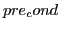 can be
. First, postcondition of a function can fail because of its own preconditions. For example, 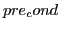 can be  and 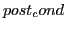 can be 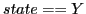, and there can be feasible path with state to be X, but does not have assignment to state variable to be Y. This will violate the postcondition based on precondition. Second, precondition of callee,
and 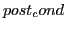 can be 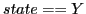, and there can be feasible path with state to be X, but does not have assignment to state variable to be Y. This will violate the postcondition based on precondition. Second, precondition of callee,
 , can fail because of precondition of caller
, can fail because of precondition of caller
 . For example, callee can have precondition with
. For example, callee can have precondition with  and caller with
and caller with  , and a feasible path from precondition of caller to precondition of callee with assignment 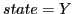 can violate the contract of callee.
, and a feasible path from precondition of caller to precondition of callee with assignment 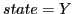 can violate the contract of callee.
The implementation proved to be much simpler since CBMC already provides keywords like
and
. To verify contract violation within a function, we had to replace all the callee preconditions with
 and caller initiator with
. It can be simply done by defining appropriate macro to replace during pre-processing stage of CBMC. When CBMC starts processing preconditions and postcondition, it assumes on initial function entry and asserts on every callee's precondition.
and caller initiator with
. It can be simply done by defining appropriate macro to replace during pre-processing stage of CBMC. When CBMC starts processing preconditions and postcondition, it assumes on initial function entry and asserts on every callee's precondition.
For second type of contract verification, we replaced preconditions with and postcondition with . When CBMC starts processing a function it assumes all the preconditions and starts processing statements between precondition and postcondition. If assumption together with following operations violates the postcondition, violations are caught in .
In example shown in fig:example:typical:contract:programming,  function is written to automatically open the door. It has preconditions for checking if the lock is not on and door is not opened already. Postcondition checking the door is open once operations are performed. The CBMC tries to check contracts between caller and calee, it will make sure that caller satisfies the requirements before it calls the function. Also when contacts are used to verify functionality of a function, we can easily find any issues with postcondition based on preconditions. Appendix B presents an example run.
function is written to automatically open the door. It has preconditions for checking if the lock is not on and door is not opened already. Postcondition checking the door is open once operations are performed. The CBMC tries to check contracts between caller and calee, it will make sure that caller satisfies the requirements before it calls the function. Also when contacts are used to verify functionality of a function, we can easily find any issues with postcondition based on preconditions. Appendix B presents an example run.
In this section we will briefly summarise the platform related library support we implemented.
In example shown in fig:example:multiple:funcalls, main generates a random number and prints it before going further with other processing. In case, programmer knows she or he is not going to use
 again, the same address can be taken by . Possibly one can also rewrite the program as shown in figure fig:example:memory:overlay.
again, the same address can be taken by . Possibly one can also rewrite the program as shown in figure fig:example:memory:overlay.
As we can see function takes a pointer to memory region, function pointer and variable number of argument to be supplied to the called function. When the function executed, instructions of function, whose pointer is supplied as parameter, are brought to specific region of the memory mentioned in the argument. This avoids any memory write backs and provides faster processing. Also this reduces the amount of memory required for applications [42].
We added support to handle memory overlays. For data overlay we treat each new memory overlay as new memory block allocation and old block as removal. The new instruction overlay and call to those instructions is treated as simple function call. This allows CBMC to handle memory overlays in simplest manner. In future work one can add support to verify the dangling pointers due to overlays.
Parallel programs have several control flow paths and produce large formulas during model checking. The platform we analysed did not pose threat of state space explosion since processes are scheduled to reduce the concurrent processes accessing same data. Tasks created by a process are designed to operate on independent data block and process waits until all the task finish their job. Once all the tasks finish their operation, process collects the results. To handle this kind of parallelism we modified CBMC libraries to treat each task creation as function calls. When multiple tasks are created once, we call the task one by one and order of call does not affect result since each task works on independent data blocks.
The home grown compiler for the platform supports various internal macros. These macros are specific to compiler and platform. With these macros programmers can perform platform specific tasks. For example, Open-MP like macro can parallelise a loop over different hardware threads.
During this thesis work we extend CBMC to handle features of DSP-C, provided a model to verify contract programming and proposed verification techniques to detect issues in Ericsson multicore DSP processor's parallel code.
In following sections we briefly discuss results of model checking performed on Ericsson's software. To begin with we used extended CBMC to check logical correctness of the code. In second step we performed contract verification. At last with collective knowledge of Ericsson's platform architecture and model checking on software, we proposed techniques to verify some more properties of the software.
With the modified CBMC, API stubbing/porting and understanding of build system, we were able process libraries of Ericsson. During the test run we observed a lot of false positives on assertions since these assertions were written to handle run time errors. This we mainly attribute to the fact that existing code is not written to provide information to static analysers. As we understood in chapter chap:background and chap:implementation, static analysers work by looking at information available in the existing logic without knowing run time information. To make the best of any static analyser one has to provide run time information statically. This information can be provided as part of header in each module or function, commented information for analysers or through contracts. Code we were working had contracts and next section provides more details on contract based verification.
The source code we used for case study was LTE baseband controller software. Code was tested and deployed into products. Model checking process on 6 major modules took little over a month. Most of the time and effort was put to avoid false positives and state space explosion. State space explosion is still a major issue in model checking. With millions of lines of code we quite often had to choose small bounding values.
In verification, contracts are expected to be defined on behaviour of the function and also provide actual limits of parameter(s). Preconditions for the function can include limits on parameters and limits on global states. Postconditions can include affected states and results being returned. The affected states can be either part of parameters or global variables.
Apart from verifying logic properties of software, like arithmetic errors or pointer analysis, model checking can be used verify specific properties of the system. For example race conditions within a thread or between threads, memory handling or mutex handling.
Thread local race conditions are seen in system where the processor core and processor peripheral access processor common memory asynchronously. For example a case study in [15] shows IBM cell processor with possible race condition between processor core and DMA controller. Ericsson platform uses a strong memory consistency model. During analysis we concluded that the DSP cores do not have thread local race conditions. Bounded model checking can verify some of thread local properties. For example:
The dynamic memory management APIs can be instrumented to detect multiple deallocation of same memory address in a single thread.
The mutex handling APIs can be instrumented to detect multiple locking/unlocking on same mutex variable.
As we discussed in earlier chapters, concurrent software have several control flow paths and produce large formulas during model checking. The platform we analysed is designed to operate on incoming signals. Typically multiple signal handlers run to completion on parallel cores. Majority of signal handler operations are independent of other signal handlers in the system. In some cases signal handlers share some resources. The signal handlers also take advantage of heterogeneous architecture and spawn threads to slave cores and accelerate the computation. Bounded model checking can be used to verify following properties of the platform.
In some cases signal handlers share resources, like shared data structures or shared IO devices. Bounded model checking can be used to identify possible race conditions.
Signal handlers make use of slave cores and transfer some of the processing to slave cores. The slave cores are capable of accessing shared memory regions, allocate or deallocate memory. Bounded model checking can be used to verify correctness of the memory usage by multiple slave cores.
The shared memory access is done within protected area. We can instrument mutex APIs to detect possible unprotected access to shared memory regions.
In current implementation we keep memory labels as variable properties in goto-programs. In future we can use these labels in verifying memory related operations.
As we discussed in previous sections, contracts defined in the code are not providing enough information to verifier. Ericsson's code can be carefully reviewed again and one can add contracts which provide enough information about functionality. Also, contracts can be defined effectively, through top down development approach. In top down development approach, product architecture is designed, architecture is divided into modules and each module will have specific functionality. This approach clearly identifies system states being used by each module. It is easier to identify possible preconditions, postcondition and invariants.
In previous chapter we have discussed various properties we identified in the system and proposed possible implementation techniques. All the properties can be verified by extending CBMC or instrumenting the software.
Below program presents a example of __fixed type.
As we can see from above program assertion will be true, same has been detected using CBCM on static analysis and given a trace of it.

Below program presents a example of __accum type.

As we can see from above program assertion will be true, same has been detected using CBCM on static analysis and given a trace of it.
![\begin{lstlisting}
file ./fixed_type.c: Parsing
Converting
Type-checking fixed_t...
...
VERIFICATION FAILED
Error[10]: while processing ./fixed_type.c
\end{lstlisting}](img88.png)
Consider a faulty implementation of open door where the door may not be opened even though preconditions are met.
The CBMC verifies for the postcondtion and suggests possible states which can lead to failure.

This document was generated using the LaTeX2HTML translator Version 2008 (1.71)
Copyright © 1993, 1994, 1995, 1996,
Nikos Drakos,
Computer Based Learning Unit, University of Leeds.
Copyright © 1997, 1998, 1999,
Ross Moore,
Mathematics Department, Macquarie University, Sydney.
The command line arguments were:
latex2html -no_navigation -split 0 report.tex
The translation was initiated by ash on 2012-10-01
![\begin{figure}\centering
\tikzstyle{module}=[draw, minimum height=4.5em, text w...
...listing} };
\path[line] (fun1) - (fun2);
\end{tikzpicture}
\par
\end{figure}](img74.png)